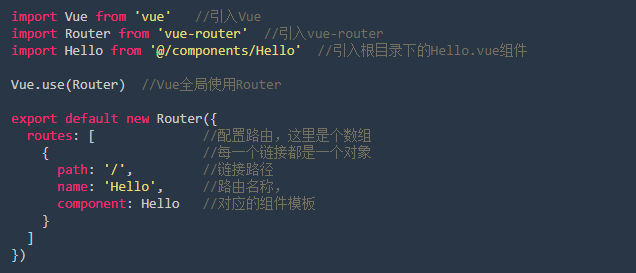
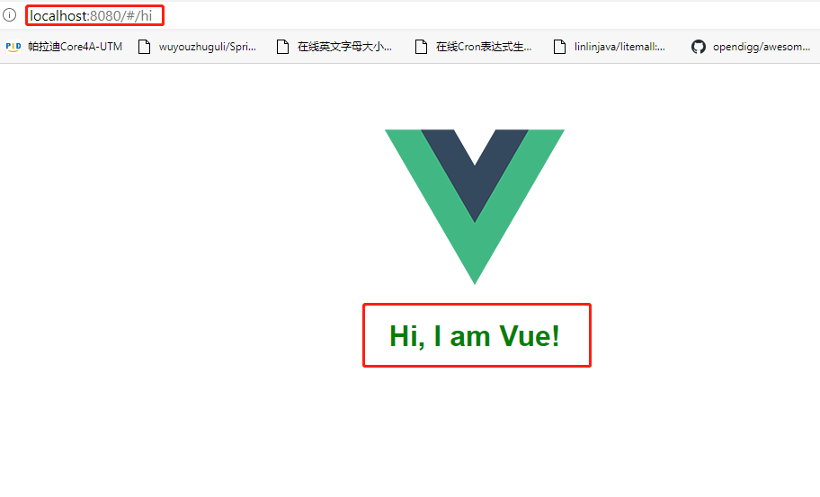
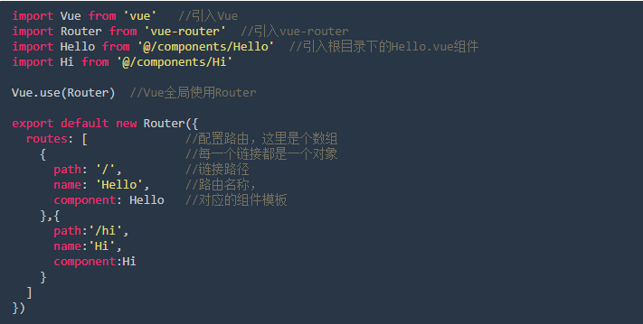

vue-router是一个插件包，所以我们还是需要用npm来进行安装的。打开命令行工具，进入你的项目目录，输入下面命令。
npm install vue-router --save-dev
如果你安装很慢，也可以用cnpm进行安装，如果你在使用vue-cli中已经选择安装了vue-router，那这里不需要重复安装了。
我们用vue-cli生成我们的项目结构，你可以在src/router/index.js文件，这个文件就是路由的核心文件，我们先解读一下它。
上边的代码中已经对每行都进行了注释，其实在这个路由文件里只配置了一个功能，就是在进入项目时，显示Hello.vue里边的内容代码。
对路由的核心文件熟悉后，我们试着增加一个路由配置，我们希望在地址栏输入 http://localhost:8080/#/hi 的时候出现一个新的页面， 先来看一下我们希望得到的效果。
看到了效果，我们看一下具体的操作步骤：
通过上面的配置已经可以增加一个新的页面了。是不是觉的自己的Vue功力一下子就提升了一个档次。 为了方便小伙伴查看，贴出现在的路由配置文件:
